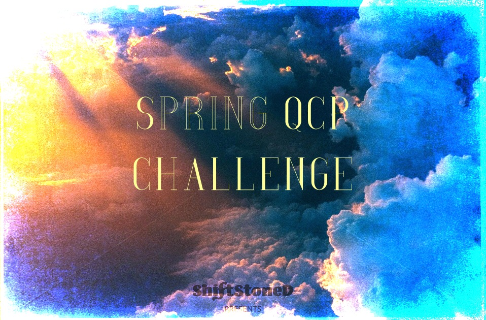

Spring QCP Challenge:
Tournament Rundown
Taking a look at the Top Eight decks from the Spring QCP Challenge for Eternal Card Game
Power portraits and standout features for each the finalists

March 13, 2020 - Intro.
Intro.
1st P L A C E:

►
Gilead's decklist (Elysian Fliers)
16T, 17P, 4xE-Grodov, 2xE-Linrei, no market
Standout feature: High in the skies, low to the ground. 27 cards that cost 1, nothing more than 4. Risky influence requirements, wants TT and PP on turn 3 but costs are low enough that alternates will usually be available. No market.
view deck ►
2nd P L A C E:

►
isomorphic's decklist (Skycrag Dragons)
23F, 18P, 4 E-Shavka, 4 Skycrag Insignia
Conservative, 87% or better, lots of ramp (Initiate, Devotee, Trail Maker, A-Merch,Tocas)
Standout feature: Benefits from undpeleted Insignias in Expedition.
view deck ►
3rd P L A C E:

►
SooNo's decklist (Destruction Strangers)
17P, 18S, Contractx4, PPPSSS for Felrauk, no Time,
Standout feature: Something something new paragraph.
view deck ►

►
Frafa's decklist (Skycrag Dragons)
29P, 16S, ChaCu's ability, CobaltWaystone, Eilyn'sFavor.
Standout feature: Something something new paragraph.
view deck ►
5th P L A C E:

►
ThoMASH's Decklist (Argenport Unseen)
20F, 23P. 3xSeekPower, 4xCobaltWaystone, 3xGraniteWaystone,
Standout feature: Something something new paragraph.
view deck ►

►
KeithPelig's Decklist (Xenan Strangers)
22F,18T,22J: 10Crest, 4xSeekPower, 3xFindTheWay, 4xA-Mart, Kairos in the market, Xulta Arcanum not to be overlooked as a power/influence source.
Standout feature: Having finished second with Xenan Strangers in 's ECQ featuring the Throne format, KeighPelig returns to the Top 8 with an Expedition build'.
view deck ►

►
Handagote88's decklist (Destruction Sacrifice)
25F, 31S, for Amilli, SeekPowerx4, 8j-sig, 2f-sig, 4x g-ways, BabyIcaria, R-BannerMarket, .
Standout feature: Something something new paragraph.
view deck ►

►
soapyelo's Decklist (Destruction Sacrifice)
32J, 21S: 8j-sig, 1s-sig, BabyIcariax4, LostScrollx4, Gavel in the Market.
Standout feature: Something something new paragraph.
view deck ►
The Expedition format has changed with the recent introduction of cards from Dead Reckoning and Trials of Grodov. Will Cultists continue to dominate in the days ahed, or will a new challenger emerge?